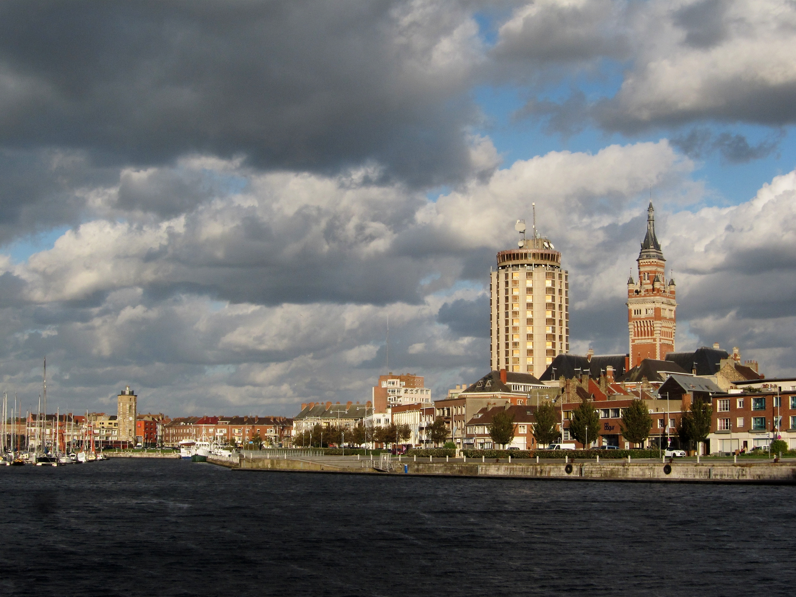
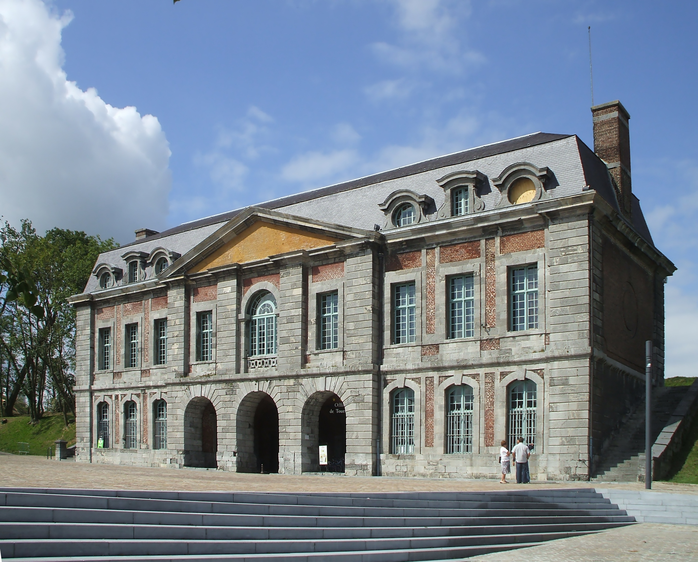
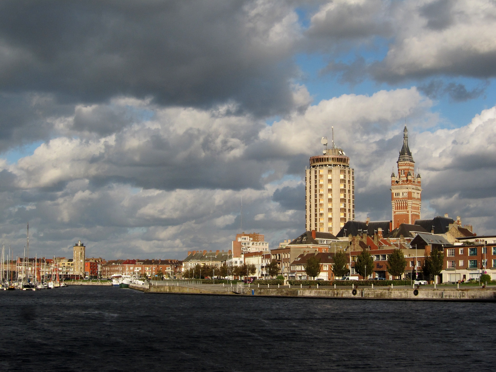
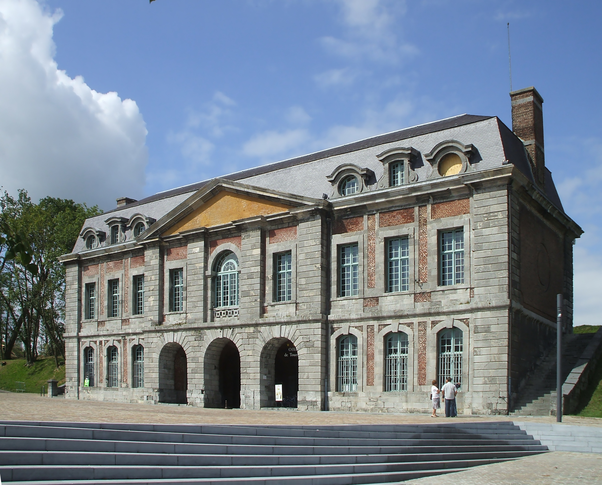
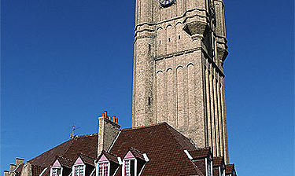
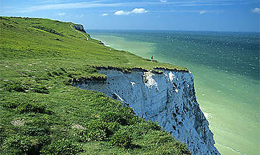
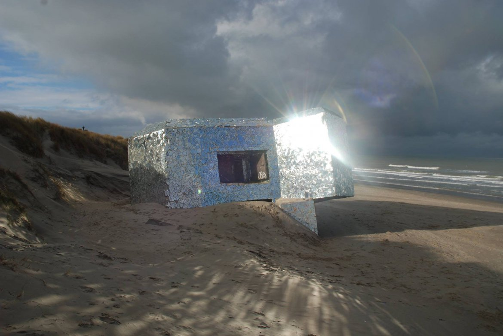
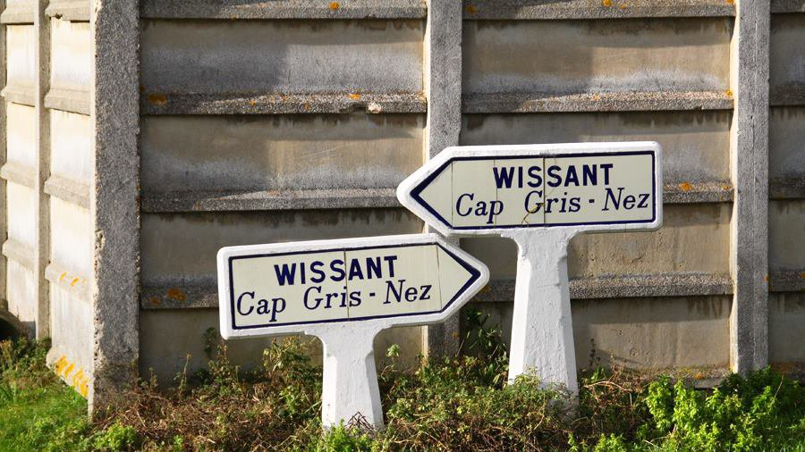
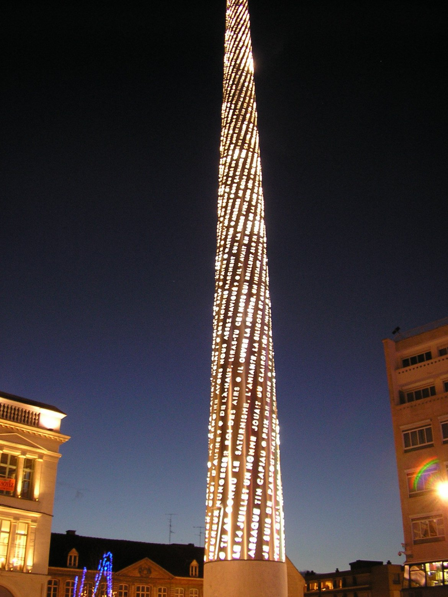

> Parcourir les villes
Les incontournables de la région



Les lieux insolites de la région



Note de l'auteur
Parce que le Nord-Pas-De-Calais ne se résumé pas au corons et autres fromages, ce site présente les divers lieux incontournables et insolites de cette belle région.
Lieux les plus visités
Événements à venir
Carnaval de Dunkerque - du 25 janvier au 14 mars 2020
Paris - Roubaix - Avril
Nuit des Arts de Roubaix - Mai
Les nuits secrètes - Aulnoye-Aymeries - Aout